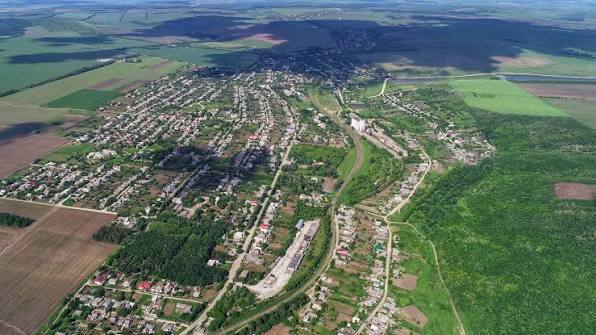
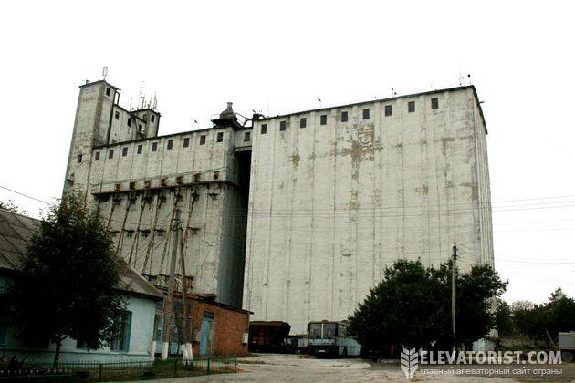
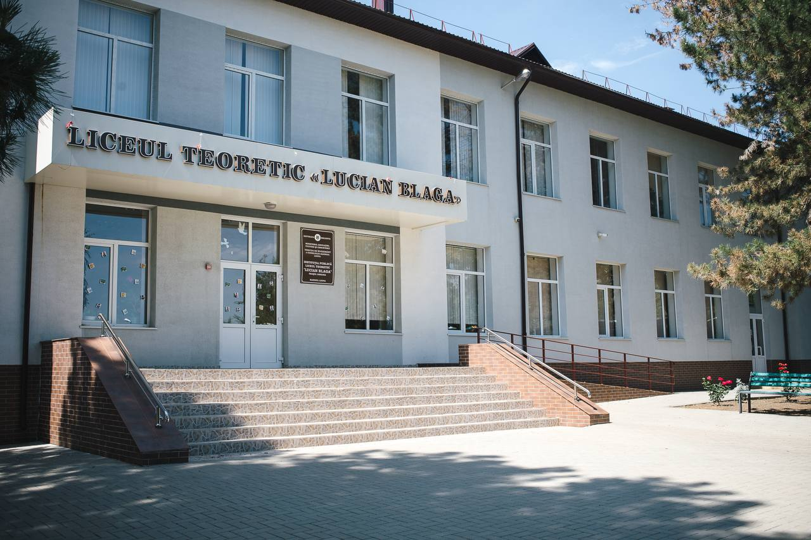

Iargara-localitatea mea
Iargara a apărut ca nod feroviar în 1902
Iargara a apărut ca nod feroviar în 1902, odată cu linia Basarabeasca–Prut. Deoarece gara a fost construită aici și nu la Leova, localitatea a devenit rapid un centru vital pentru colectarea cerealelor. Dezvoltarea sa a fost dictată de calea ferată și de construcția elevatorului, transformând un mic punct de tranzit într-un oraș industrial și logistic esențial pentru sudul Moldovei. Astăzi, Iargara își păstrează statutul de centru agrar-industrial strategic în raionul Leova.
S.A. ELEVATORUL IARGARA
S.A. ELEVATORUL IARGARA este o întreprindere din Republica Moldova, situată în orașul Iargara, raionul Leova, specializată în depozitarea și comercializarea produselor agricole. Compania activează din anul 1995 sub codul fiscal 1003605005073 și are sediul pe strada 31 August 1989, nr. 3. Principalele activități includ prestarea serviciilor de recepție, condiționare (curățare și uscare) și păstrare a cerealelor, leguminoaselor și culturilor oleaginoase. Datorită amplasării sale strategice și a accesului la infrastructura feroviară, elevatorul facilitează exportul și logistica materiilor prime agricole din zona de sud a țării. Pe lângă depozitare, întreprinderea se ocupă și cu cultivarea propriilor culturi și comerțul cu ridicata.
Liceul Teoretic „Lucian Blaga”
În Iargara funcționează Liceul Teoretic „Lucian Blaga”, o instituție importantă pentru educația tinerilor din oraș și din localitățile apropiate. Liceul are o tradiție de zeci de ani și oferă învățământ primar, gimnazial și liceal. Elevii studiază discipline precum limba română, matematica, istoria, biologia și limbile străine. Școala dispune de săli de clasă renovate, laboratoare pentru științe și echipamente moderne care ajută la desfășurarea lecțiilor într-un mod interactiv. Pe lângă ore, elevii participă la concursuri, proiecte educaționale și activități culturale. Profesorii îi susțin și îi pregătesc pentru examenele naționale și pentru continuarea studiilor. Astfel, liceul reprezintă un loc unde se formează viitorul tinerilor din Iargara.